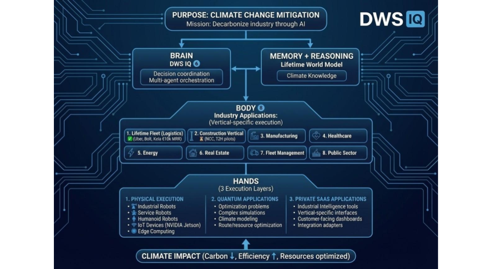

The Opportunity
Real-World Pain Points:
| Year | Regulation | Impact |
|---|---|---|
| 2024–2025 | CSRD (Corporate Sustainability Reporting Directive) | 50,000+ EU companies must report |
| 2025–2026 | Fit for 55 – Building renovation wave | All major renovations require energy/climate documentation |
| 2026–2030 | EPBD (Energy Performance of Buildings Directive) | Mandatory building passports across EU |
| 2027–2035 | ETS expansion (Emissions Trading System) | Construction, logistics, healthcare included |
The mandate is clear: companies must buy climate compliance tools or face penalties.
The Firehorse Framework: Brain–Memory–Body–Hands
┌──────────────────────────────────────────────────────────┐
│ DWS IQ 6 (Brain) │
│ Climate intelligence & orchestration │
└───────────────────┬──────────────────────────────────────┘
│
┌───────────┴───────────┐
│ │
┌───────▼────────┐ ┌────────▼────────┐
│ Memory (RAG) │ │ Body (MCP Hub) │
│ Regulations │ │ Data connectors│
│ Templates │ │ Integrations │
└───────┬────────┘ └────────┬────────┘
│ │
└──────────┬───────────┘
│
┌──────────▼──────────┐
│ Hands (Agents) │
│ Firehorse Report │
│ Firehorse Flow │
│ Custom Agents │
└─────────────────────┘Climate Reporting Starter Bundle
Time to Value: 4 weeks from contract to audit-ready report
Current State (December 2025)
Customer Profile
| Customer | Vertical | Status | MRR | Annual Savings |
|---|---|---|---|---|
| Uber Finland | Logistics | Paid | €2,500 | €50,000 |
| Bolt Finland | Logistics | Paid | €2,000 | €40,000 |
| Kela | Healthcare | Paid | €2,500 | €60,000 |
| Construction Co. A | Construction | Pilot | €0 (→€3k) | TBD |
| Construction Co. B | Construction | Pilot | €0 (→€3k) | TBD |
Evidence of Traction
/docs/Reports/en/Path to €14k MRR (Q1 2026)
Market Size Calculation
Nordic Market (Finland, Sweden, Norway, Denmark) - 150,000 companies affected by CSRD/Fit for 55/EPBD - Average contract value: €6,500 setup + €1,999/year = €2,500/year blended - Nordic TAM: €375M annual recurring - With multi-vertical expansion: €2.68B over 10 years
EU Market (Expansion) - 50,000+ companies under CSRD mandate - 500,000+ affected by Fit for 55 & EPBD - EU TAM: €15–20B over 10 years

| Year | Driver | Vertical | Market Size |
|---|---|---|---|
| 2025–2026 | CSRD | All large enterprises | €2B |
| 2026–2028 | Fit for 55 | Logistics, Construction | €5B |
| 2027–2030 | EPBD | Real Estate, Construction | €8B |
| 2030–2035 | ETS Expansion | Healthcare, Manufacturing, Agriculture | €10B |
Timing is Everything: We’re entering the market as mandates hit, not before.
Why DWS IQ 6 is Defensible
Technical Moat
Competitors → Point solutions (static dashboards, manual data entry)
DWS IQ 6 → Agent platform (extensible, MCP-native, autonomous)
Competitors → Cloud SaaS (data leaves EU, compliance risk)
DWS IQ 6 → Private cloud (EU-hosted, GDPR/CSRD compliant by design)
Competitors → Single vertical focus
DWS IQ 6 → 8 verticals via modular agent architectureStrategic Upside: We’re not building a climate reporting tool. We’re building the platform for agentic compliance automation.
Strengthens enterprise security posture for Tier 1 construction customers by keeping sensitive climate and financial models in isolated, EU-hosted sandboxes. Opens a new high-margin revenue stream via private customer sandboxes and reduces infrastructure cost through pay-per-use instead of fixed hosting. Fits our hybrid edge/cloud model with the NVIDIA fleet and reinforces DWS IQ 6 as the de facto platform for Fit for 55 compliance across 8–16 regulated industries.
| Benefit | Impact |
|---|---|
| Security | EU-hosted isolation → Tier 1 enterprise trust |
| Revenue | Sandbox subscription → €2,000–€5,000/mo per customer |
| Cost | Pay-per-use → 40–60% infra savings |
| Positioning | De facto Fit for 55 compliance platform |
Standard Package
Typical ARR by Vertical
| Vertical | Avg Setup | Avg Annual | Multi-Site Multiplier | Typical 3-Year Value |
|---|---|---|---|---|
| Logistics | €6,500 | €1,999 | 5–10 sites | €70k–€120k |
| Construction | €6,500 | €2,499 | 10–20 projects | €80k–€150k |
| Healthcare | €6,500 | €2,999 | 3–5 hospitals | €60k–€100k |
| Manufacturing | €6,500 | €2,499 | 5–15 facilities | €70k–€130k |
Revenue Roadmap
Unit Economics
Founder & CEO - 15+ years enterprise software & cloud architecture - Built agentic AI systems for Fortune 500 clients - Deep expertise in MCP, Claude, and autonomous agent orchestration - Track record: successful exits, enterprise deployments, regulatory compliance projects
Advisory Board - Climate compliance experts (CSRD, Fit for 55, EPBD) - Enterprise SaaS GTM advisors - Technical advisors (MCP ecosystem, Anthropic partnerships)
Why Finland = Investor Protection & Market Edge
Finland is not just a location. It’s a strategic advantage for EU climate tech.
SAFE Terms - Amount: €150,000 - Valuation Cap: €3,800,000 - Discount: 20% on next priced round - Conversion: Converts at Series A (target €15M+ in 2026)
Use of Funds (12–18 Month Runway)
| Category | Allocation | Purpose |
|---|---|---|
| Engineering | 40% (€60k) | - DWS IQ 6 core platform development - MCP agent library expansion - Construction vertical agents - Infrastructure automation |
| Sales & GTM | 30% (€45k) | - Pilot-to-paid conversion (construction) - Healthcare vertical expansion - Customer success & onboarding - Marketing collateral & case studies |
| Infrastructure | 20% (€30k) | - Private cloud hosting (GCP EU) - GDPR/SOC2 compliance infrastructure - Monitoring & security - Backup & disaster recovery |
| Compliance & Legal | 10% (€15k) | - Regulatory tracking & updates - Legal contracts & IP protection - Series A preparation (investor docs, due diligence) |
12–18 Month Milestones
| Milestone | Target Date | Metric |
|---|---|---|
| Convert construction pilots | Q1 2026 | €14k MRR |
| Launch healthcare vertical | Q2 2026 | +3 customers, €22k MRR |
| Expand to Sweden/Norway | Q3 2026 | +5 customers, €40k MRR |
| Series A readiness | Q4 2026 | €60k+ MRR, €900k ARR run rate |
| Breakeven visibility | Q1 2027 | €80k MRR, path to profitability |
Bridge to Series A (€15M+ in 2026)
This SAFE round provides runway to hit the milestones that justify a €15M+ Series A valuation: - €900k ARR run rate - 20+ paying customers across 3 verticals - Proven unit economics (LTV:CAC > 10:1) - Multi-country expansion (Finland, Sweden, Norway) - MCP platform ecosystem with 3rd-party agent integrations
Why Invest Now
✓ Proven traction: €7k MRR, 100% retention, live deployments ✓ Mandatory market: CSRD/Fit for 55 regulations = forced purchases ✓ Platform moat: MCP-native architecture, not a point solution ✓ Clear path to Series A: €900k ARR milestone in 18 months ✓ Downside protection: Finland-based, EU regulation tailwind
Contact
Lifetime Oy DWS IQ 6 – Climate Intelligence Platform
📧 Contact: investor@dws10.com 🌐 Website: dws10.com/legal 📄 Documentation: github.com/blogtheristo/dws6/investor-outreach
Let’s build the future of climate compliance together.
/docs/Reports/en//Store/bundle.md,
/Store/firehorse_reports.md/docs/roadmaps/ROADMAP.md/ARCHITECTURE_SUMMARY.md/investor-timeline.md/investor-outreach/01-angel-investor-letter.md/investor-outreach/02-vc-seed-round-letter.md/Sales/Myyntikirje_3_Omnibus_Pivot.md – Full customer
letter with EU Omnibus analysis/Sales/Myyntikirje2_Fitfor55meansFitfor55.md – “Fit for 55
= Fit for 55”/investor-outreach/CLOUDFLARE_SANDBOX_VALUE_PROPOSITION.md/sales-outreach/enterprise-sales.md/docs/CLOUDFLARE_SANDBOX_PILOT.md| Metric | Current | Q1 2026 Target | Q4 2026 Target |
|---|---|---|---|
| MRR | €7k | €14k | €60k |
| Paying Customers | 5 | 8 | 25 |
| Pilot Customers | 2 | 0 (converted) | 5 |
| Churn Rate | 0% | <5% | <5% |
| CAC | €6k | €5k | €4k |
| LTV | €90k | €100k | €110k |
| LTV:CAC | 15:1 | 20:1 | 25:1 |
Document Version: 1.1 Last Updated: January 4, 2026 Prepared For: Angel & Seed Investors Confidential: Not for public distribution
Key Message: Fit for 55 and CSRD targets did not change after Omnibus – only the paperwork did.
New Materials Added: - Enterprise Sandbox revenue stream (Slide 6) - Situation Room + Control Room cockpits - 4 Concrete Promises for Construction Management - Updated objection handling for Omnibus concerns